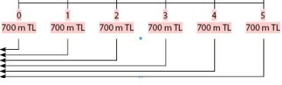
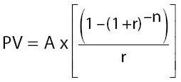

FİNANSAL MATEMATİĞE GİRİŞ
Tüm pozitif bilimlerin temelinde karşımıza çıkan matematik, finansal piyasalarda işlem yapan yatırımcı ve profesyoneller için de karşımıza finansal matematik formunda çıkmaktadır. Modern bilişim sistemlerinin de varlığı ile pek çok işlemsel hamallığı üzerimizden alan teknolojiler, ne yazık ki hâlâ matematikten bihaber olmamızı engelleyecek düzeye gelemediler. Gelmiş olsalar dahi, müşteri ziyareti, yeni ürün tasarlanması ya da ihtiyaçlar doğrultusunda ürün modifikasyonu gibi durumlarda, karar vericinin matematik bilgisine ihtiyaç duyulacağı gerçeğinde radikal bir değişiklik yaratamamışlardır.
İşte bu yüzden finansal kurumlarda çalışan tüm profesyonellerin ya da "ne ola ki bu finansal matematik?" diyen yatırımcıların basit bir üssel fonksiyonlu hesap makinesi yardımı ile fiyatlamaya esas olan matematik denklemleri kuracak ve bunları çözecek temel finansal matematik bilgisine sahip olmaları gerekmektedir. Kitabın bu bölümü de bu amaçla tasarlanmış olup, bilgisayar ya da finansal hesap makinesine ihtiyaç duyulmaksızın, üssel fonksiyonlu basit bir hesap makinesi ile finansal hesapların yapılması konusundaki gerekli bilgi ve becerileri kazandırmayı hedeflemektedir.
Böylesi bir konunun bir kitap aracılığıyla öğrenilmesinin güçlüğünün farkında olan ve yaşamının yaklaşık on yılını bu konuyu çeşitli seminerlerde ve sınıf içi eğitimlerde anlatarak geçirmiş biri olarak, size kötü bir haberim var: Ne yazık ki yanlızca okuyarak kapamayacağınız bir konu ile karşı karşıyasınız! Yani elinize bir üssel fonksiyonlu hesap makinesi almak ve onu kullanarak sayfaları çevirmek zorundasınız (hayır sayfaları elinizle çevirebilirsiniz, makine soruları çözmek için lazım). Üssel fonksiyonlu bir hesap makinesi dediğimizde kastımız, örneğin 35’i hesaplayabilecek, xy ya da ab şeklinde tanımlı tuşları olan en basit hesap makinesidir. Bu anlamda, bilgisayar kullanıyorsanız, Windows işletim sisteminin içindeki hesap makinesi de işinizi görecektir. Ancak yine de bizim önerimiz elinizin altında böyle bir makine bulundurmanızdır. Böylesi en ucuz makinelerin kitabın fiyatının altında olduğunu biliyorum, zira seminerlerim için her hafta yarım düzine kadar satın almak zorunda kalıyorum (zamanla eksiliyor da).
Modül, öncelikle paranın zaman değeri gibi temel finansal bilgiler ile başlayarak, uç noktada finansal ürünlerin fiyatlandırılması, getirilerinin hesaplanması ve birbirleriyle kıyaslanması sürecini tanıtacak ve ağırlıklı olarak bol örnek içeren bir süreçle program tamamlanacaktır. Finansal matematik konusunu dört temel başlık altında inceleyeceğiz:
• Paranın Zaman Değeri ve Faiz Kavramları
• Faizlendirme ve İskontolama
• Anüite Hesapları
• Finansal Ürünler ve Matematik
PARANIN ZAMAN DEĞERİ VE FAİZ KAVRAMLARI
Şimdi, sırayla bu konuları incelmeye başlayalım. Öncelikle "Paranın zaman değeri ve faiz kavramları"ndan başlayacağız.
Paranın zaman değeri, kısaca paranın zaman karşısında, özellikle de enflasyon karşısındaki değerinin korunması gereğinin mantığı üzerine kurulmuştur. Buna göre yatırımcı cebindeki parasından belli bir süre uzak kalmak karşılığında belli bir getiri talep edecektir. Her ne kadar bazı sistemlerde farklı isimler altında anılsa da tanımı gereği, paranın zaman değerinin bünyesinde "faiz" kavramı vardır.
Bu nedenle"paranın zaman değeri" konusunu da çeşitli faiz kavramlarıyla birlikte işleyeceğiz:
1. Paranın Zaman Değeri
2. Basit Faiz
3. Bileşik Faiz
4. Sürekli Faiz
5. Nominal ve Efektif Faiz
1. Paranın Zaman Değeri
Zamanı bilinmeyen bir paranın değerini saptamak da problemli olacaktır. Para zamana göre değer ve anlam kazanır. Mevcut enflasyonist ortamda peşin 200 TL’nin 5 yıl sonraki 250 TL’den daha değerli olduğu tartışılmayacak bir gerçektir. Faiz hesabı yapabilen herkes, peşin 200 TL’yi 5 yıl sonraki 250 TL’ye tercih edecektir. Ancak süre kısaldığında ya da söz konusu para üzerinde ince hesaplara girildiğinde hesaplamalar zorlaşabilecektir.
Benzer biçimde, bugün 100 TL’ye mal olan bir yatırım, 2 yıl sonra 265 TL getiri sağlıyorsa, bu yatırım yapılmalı mıdır? Şüphesiz bu sorunun yanıtı, söz konusu 2 yıllık dönem içinde paranın değerinin aşınma oranına bağlıdır. İşte bu örneğimizde paranın aşınma oranı olarak ifade ettiğimiz kavram, paranın zaman değeri olarak belirttiğimiz kavramdır.
Paranın Zaman Değeri kavramını daha geniş olarak açıklayabilmek için konuya hem fon sağlayan (ödünç veren) hem de fon kullanan (ödünç alan) açısından bakalım. Fon kullanan açısından paranın zaman değeri, bugün ödünç alarak kullandığı paraya karşılık olarak gelecekteki herhangi bir zaman noktasında geri ödediği/ödeyeceği para arasındaki farktır. Benzer şekilde, fon sağlayan kişinin açısından da bugün ödünç verdiği paraya karşılık gelecekteki herhangi bir zaman noktasında almaya razı olduğu para arasındaki farktır. Her iki örnekte de söz konusu fark, paranın iki zaman noktası arasındaki değer kaybını gösteren ve paranın zaman değeri olarak tanımlanan kavramdır. Dolayısıyla, paranın zaman değerinin işlevi, değişik zaman noktalarında gerçekleşmeleri söz konusu olan nakit akımlarının her birinin/hepsinin değerlerini gösteren aynı zaman noktasına göre belirlemektir.
Paranın zaman değerini açıklamak için iki temel kavram tanıtılmalıdır:
• Gelecek Değer Kavramı
• Şimdiki Değer Kavramı
Gelecek Değer Kavramı
Gelecek değer, bir paranın belirli bir faiz oranı üzerinden belirli bir süre sonra ulaşacağı değeri ifade etmektedir. Bu kavramı matematiksel olarak gösterebilmek için şu notasyonları kullanalım:
FV = PV + PV x r
FV = PV (1 + r)
PV : Anapara
r : Dönemsel faiz oranı
PV x r : Dönem sonundaki faiz tutarı
FV : Dönem sonundaki anapara ve faiz tutarı
Buna göre, bugün PV miktarındaki para yıllık r faiz oranı üzerinden 1 yıl yatırıldığında para, 1 yıl sonunda FV değerine ulaşacak ve bu değer de
FV = PV + faiz kazancı = PV + PV x r = PV (1 + r)
olacaktır.
Şimdiki Değer Kavramı
Şimdiki değer, herhangi bir nakit akımının bugünkü veya sıfır zaman noktasındaki değeridir. Paranın değerindeki aşınmanın/zaman değerinin pozitif olduğu bir ortamda, örneğin 2 yıl sonra gerçekleşecek olan 400 TL’nin şimdiki/bugünkü değerinin 400 TL’den daha az olacağı açıktır. Ancak, bu değerin tam olarak kaç TL olduğunun belirlenmesi amacıyla şimdiki değer saptanmalıdır.
2. Basit Faiz
Faiz oranının anapara tutarı ile çarpılmasıyla yapılan hesaplama yöntemi basit faiz kavramı olarak kabul edilebilir. Bu noktada ve çalışmanın ilerleyen bölümlerinde gelecek değer bölümündeki notasyon kullanılacaktır.
Faiz hesaplamalarını formül hâlinde şöyle belirleriz:
FV = PV + PV x r
FV = PV (1 + r)
PV : Anapara
r : Dönemsel faiz oranı (yüzde değer olarak)
PV x r : Dönem sonundaki faiz tutarı
FV : Dönem sonundaki anapara ve faiz tutarı
FV = PV (1 + r) [1]
Basit faizdeki temel yaklaşım, her dönem sonunda işleyen dönemsel faizin anaparaya eklenmemesidir. Dönem sonunda işlemiş olan faiz üzerinden devam eden dönemlerde faiz kazanmak mümkün değildir.
Diğer bir deyişle, faize faiz işletilmez. Basit faiz mantığı ile PV’nin iki dönem sonraki değeri FV2’de aşağıdaki şekilde hesaplanacaktır:
FV2 = PV (1 + r) + PV x r
FV2 = PV (1 + 2r)
Aynı mantıkla n dönem sonunda PV tutarlı anaparanın ulaşacağı değer FVn,
FVn = PV (1 + n x r)
olarak hesaplanır.
n dönem içinde kazanılan toplam faiz miktarı,
Faiz Miktarı = PV (1 + n x r) – PV ’dir.
n döneme ait basit faiz oranı,
rn = (PV(1 + n x r) – PV) / PV
rn = n x r olarak hesaplanır.
n Döneme Ait Basit Faiz Oranı
rn = n x r
rn : n Döneme Ait Basit Faiz Oranı
n : Dönem Sayısı
r : Dönemsel Faiz Oranı
ÖRNEK 1
Aylık net %5 ile değerlendirilen bir yatırımın 6 aylık basit faiz oranı kaçtır?
rn = n x r
r6 = 6 x 0,05
r6 = 0,30 (%30)’dur.
ÖRNEK 2
Yıllık %64 faiz ile yatırdığınız 2.000 TL’nin basit faiz hesabına göre 3 yıl sonunda anapara ve faiz ödemeli olmak üzere, ulaşacağı değer ne kadar olacaktır?
1 yıllık faiz tutarı = PV x r
3 yıllık faiz tutarı = PV x r x 3
= 2.000 x 0,64 x 3
= 3.840 TL
Anapara + Faiz = 2.000 + 3.840
= 5.840 TL
3. Bileşik Faiz
Bileşik faiz, dönemler itibarıyla anapara tutarına karşılık gelen faiz tutarının yine aynı faiz şartları üzerinden değerlendirilmesi varsayımıyla anaparanın kazandığı toplam faiz tutarının katlanarak büyümesi esasına dayanır. Buna göre para + faizi yeniden faizlendirilmektedir (yani daha çok paranız olur).
ÖRNEK 3
Bankaya 2.000 TL tutarındaki mevduatınızı %64 net faizle yılda bir kere faiz ödemeli olarak 3 yıl vadeli yatırdınız.
• Yatırdığınız paranın 3 yıl sonundaki değeri ne olacaktır?
• Bulduğunuz değeri basit faiz hesabına göre hesapladığınız değer ile karşılaştırınız.
1. Yıl sonundaki değer:
| Dönem Başı Tutarı | (1 + r) | Dönem Sonu Tutarı | |
| 1 | 2.000 | 1,64 | 3.280 |
2. Yıl sonundaki değer:
| Dönem Başı Tutarı | (1 + r) | Dönem Sonu Tutarı | |
| 1 | 2.000 | 1,64 | 3.280 |
| 2 | 3.280 | 1,64 | 5.379 |
3. Yıl sonundaki değer:
| Dönem Başı Tutarı | (1 + r) | Dönem Sonu Tutarı | |
| 1 | 2.000 | 1,64 | 3.280 |
| 2 | 3.280 | 1,64 | 5.379 |
| 3 | 5.379 | 1,64 | 8.821 |
Basit faiz hesabı ile 3 yıl sonunda toplam anapara ve faiz tutarını önceki örnekte bulmuştuk. Bu değer: 5.840 TL
Bileşik faiz hesabı ile 3 yıl toplam anapara ve faiz tutarı ise 8.821 TL olmaktadır.
Görüldüğü üzere, bileşik faiz hesabına göre hesaplanan mevduat hesabının dönem sonu tutarı, basit faiz hesabına göre hesaplanan mevduat hesabı tutarından daha fazladır. Bunun nedeni, dönemler itibarıyla kazanılan faizin, aynı faiz oranı ile dönem sonuna kadar tekrar değerlendirilmesidir.
Bileşik faiz kavramı için akılda tutulması gereken önemli noktalardan birisi de hiç kuşkusuz faiz oranı’nın dönemler boyunca sabit kalacağı varsayımıdır. Bu varsayım, ülkemizdeki genel durum dikkate alındığında, çok da olanaklı görülmemekle birlikte, yine de anlamlıdır. Zira farklı vadeli yatırım alternatiflerini kıyaslamak gerektiğinde, onları aynı vadeye getirerek kıyaslayabilmek açısından, tümünün de aynı vadedeki (örneğin 1 yıllık) bileşik faizleri hesaplanacak ve en yüksek bileşik getirisi olan tercih edilecektir. Dolayısıyla, uzun vadede faiz oranlarının değişme riski yüksek olmakla birlikte, yine enstrümanların getirilerinin kıyaslanabilmesi açısından bileşik faizlerinin hesaplanması anlamlı olmaktadır.
Yukarıdaki bölümde yıl içinde sadece bir kere yıl sonunda olmak üzere faiz ödenmesi prensibini inceledik. Şimdi de yılda bir kereden daha fazla faiz hesaplanması durumunda sonuçların nasıl etkileneceğini inceleyelim:
ÖRNEK 4
1.000 TL tutarındaki paranızı yıllık %58 faizle, yılda bir kere faiz ödemeli olarak yatırdınız. Yılda 2 ve 4 kere faiz aldığınız mevduatın (yani 6 ve 3 er aylık mevduatlar) değerini basit faiz hesabına göre hesapladığınız değer ile karşılaştırınız. Bu durumda yıllık net faiz geliriniz toplam olarak ne kadar olacaktır?
Yıllık olarak parayı yatırmamız durumunda yıl sonunda alacağımız anapara ve faiz tutarı:
| Dönem Başı Tutarı | (1 + r) | Dönem Sonu Tutarı | |
| 1 | 1.000 | 1,58 | 1.580 |
Bu örnekte, 6 ayda bir faiz ödemeli (yılda 2 kere) mevduata alacağımız faiz ve anapara tutarı tabloda gösterildiği gibi olacaktır:
| Dönem Başı Tutarı | (1 + r / 2) | Dönem Sonu Tutarı | |
| 1 | 1.000 | 1,29 | 1.290 |
| 2 | 1.290 | 1.29 | 1.664 |
Buna göre yıllık yerine 2 kez 6 aylık dönemde faizlenen paranın vade sonu değeri daha yüksek olmaktadır. Örneğimizde bu fark:
1.664 – 1.580 = 84’tür.
Aynı örnekte, 3 ayda bir faiz ödemeli (yılda 4 kere) mevduata alacağımız faiz ve anapara tutarı ise aşağıdaki gibidir:
| Dönem Başı Tutarı | (1 + r / 4) | Dönem Sonu Tutarı | |
| 1 | 1.000 | 1,145 | 1.145 |
| 2 | 1.145 | 1,145 | 1.311 |
| 3 | 1.311 | 1,145 | 1.501 |
| 4 | 1.501 | 1,145 | 1.718 |
Sonuç olarak:
Yılda 1 kere faiz ödemeli
toplam anapara ve faiz tutarı : 1.580 TL
Yılda 2 kere faiz ödemeli
toplam anapara ve faiz tutarı : 1.664 TL
Yılda 4 kere faiz ödemeli
toplam anapara ve faiz tutarı : 1.718 TL
olmaktadır.
Bu durumda, yılda 4 kere (her 3 ayda bir) faiz ödemeli bir mevduat hesabı, yılda 2 kere ve yılda 1 kere faiz ödemeli mevduat hesabından daha fazla getiri sağlar. Çünkü yılda birden fazla dönüşü olan mevduat sisteminde, faiz olarak alınan tutarın tekrar değerlendirilmesi mümkün olabilecektir.
ÖRNEK 5
Anapara = 100 TL Faiz Oranı = %64 Süre = 1 yıl
a. Yılda 1 kere faiz ödemeli
FV = 100 x (1 + (0.64 / 1))1
= 100 x 1.64
= 164 TL
b. Yılda 2 kere (6 ayda bir) faiz ödemeli
FV = 100 x (1 + (0.64 / 2))2
= 100 x 1.7424
= 174.24 TL
c. Yılda 4 kere (3 ayda bir) faiz ödemeli
FV = 100 x (1 + (0.64 / 4))4
= 100 x 1.8106
= 181.06 TL
ç. Yılda 12 kere (aylık) faiz ödemeli
FV = 100 x (1 + (0.64 / 12))12
= 100 x 1.8654
= 186.55 TL
d. Yılda 365 kere (günlük) faiz ödemeli
FV = 100 x (1 + (0.64/365))365
= 100 x 1.8954
= 189.54 TL
Bu antrenmanları yanlızca gözle takip etmediğinizi umuyoruz. Söz konusu hesapları kendi makinenizin ekranında yapmamanız hâlinde, ilk pratik uygulamanızın başarısızlıkla sonuçlanma olasılığının oldukça yüksek olduğuna emin olabilirsiniz. Bu nedenle, lütfen şimdi, yukarıdaki hesapları bir kez de makineniz eşliğinde yapınız; burada kritik nokta parantezlerdir. Açtığınız parantez kadarını kapatmalısınız!
Döneme Ait Bileşik Faiz Oranının Hesaplanması
Bir önceki bölümde yapmış olduğumuz örneği hatırlayalım:
Anapara = 100 TL
Faiz oranı = %64
Süre = 1 yıl
Bu bilgiyle gecelik (over night) faizlendirilen paranın dönem sonu değeri: 189.54 TL idi.
Bu durumda dönemsel toplam getiri tutarı, dönem sonu değeri ile dönem başı değeri arasındaki fark kadar olacaktır. Buna göre toplam faiz tutarı:
189,54 – 100 = 89,54 TL’dir.
Söz konusu faiz, paranın her gün faizlendirilmesiyle bulunduğuna göre, aslında paranın bileşik faizlendirilmesi suretiyle elde edilmiştir. O hâlde dönemsel bileşik faiz oranı:
Bileşik faiz oranı = 89,54 / 100 = 0.8954 = %89,54’tür.
Bu rakam anlamlı olmakla birlikte, bileşik faiz sorulduğunda, önce paranın dönem sonu değerini bulup bu değerin ana para ile oranlanarak hesaplanmasından daha pratik bir yol olmalıdır.
Bu aşamada, dönemsel bileşik faiz oranını bulmak için pratik bir formülün türetilişini tartışacağız:
r dönemsel faiz oranı ile değerlendirilen PV tutarlı anaparanın 1 dönem sonundaki değeri FV1:
FV1 = PV (1 + r)
2 dönem sonundaki değeri FV2:
FV2 = PV (1 + r) + PV (1 + r) x r
FV2 = PV (1 + r)2
n dönem sonundaki değeri FVn;
FVn = PV (1 + r)n
olarak hesaplanmıştı. Buna göre n dönem içinde kazanılan toplam faiz miktarı ise,
Faiz miktarı = PV (1 + r)n – PV’dir.
Buna göre, n döneme ait bileşik faiz oranı ise;
rn = (PV (1 + r)n – PV) / PV
rn = (1 + r)n – 1 olarak hesaplanır.
n Döneme Ait Bileşik Faiz Oranı
rn = (1 + r)n – 1
rn : n Dönemlik Bileşik Faiz Oranı
r : Dönemsel Faiz Oranı
n : Dönem Sayısı
ÖRNEK 6
Anapara = 100 TL
Faiz Oranı = %52
Süre = 1 yıl
a. Yılda 1 kere faiz ödemeli
b. Yılda 4 kere faiz ödemeli (3 ayda 1 kere faiz ödemeli)
c. Ayda 1 kere faiz ödemeli
ç. Yılda 365 kere faiz ödemeli
olmak üzere yıllık bileşik faiz oranlarını hesaplayalım:
a.
r1 = (1 + 0,52)1 – 1
r1 = 0,52 => (%52.00)
b.
r4 = (1 + 0,52 / 4)4 – 1
r4 = 0,6304 => (%63,04)
c.
r12 = (1 + 0,52 / 12)12 – 1
r12 = 0.6637 => (%66.37)
ç.
r365 = (1 + 0,52 / 365)365 – 1
r365 = 0.6814 => (%68.14)
4. Sürekli Faiz
Yıllık faiz oranı r, verildiğinde ve faiz hesaplamalarında dönem sayısı olan n, çok büyük olduğu takdirde, bu durum sürekli faiz kavramını gündeme getirmektedir.
Daha çok teorik bir durumu yansıtmakta olan sürekli faiz kavramında denklem aşağıdaki şekli alır:
FV = PV (1 + r/n)n
n => sürekli
FV : Gelecekteki değeri
PV : Anapara değeri
r : Yıllık faiz oranı
n : Yılda kaç kere faiz ödendiği
FV = PVer
e : 2.718
Bu durumda sürekli faiz oranı hesaplanmak istendiğinde aynı mantık ile
rs = er – 1
elde edilir.
rs : Yıllık sürekli faiz oranı
r : Yıllık basit faiz oranı
Sürekli faiz oranı bir bileşik faiz türü olmakla beraber finans ve bankacılıkta uygulaması yoktur. Sürekli faiz, verilmiş olan basit faizin ulaşılabileceği en yüksek bileşik faizi ifade etmektedir.
ÖRNEK 7
%74 yıllık basit faiz oranının yıllık sürekli faiz oranı kaçtır?
rs = e0,74 – 1
rs = 1,0957 => (%109.57)
5. Nominal Faiz ve Efektif Faiz
Yılda birden fazla ödemeli faiz hesaplarında, yıl sonunda gerçekleşen faiz oranlarının hesaplanması nominal ve efektif faiz oranları kavramını gündeme getirmektedir. Nominal faiz oranı yıllık basit faiz oranını, efektif faiz oranı ise yıllık bileşik faiz oranını ifade etmektedir. Hem nominal faiz oranı hem de efektif faiz oranı bankacılık sisteminde kullanılmaktadır.
Kredi, mevduat, repo gibi çeşitli finansal ürünlerin faiz oranlarının karşı tarafa bildirilmesinde nominal faiz oranları kullanılır. Örneğin, banka müşteriye 3 ay vadeli kredi faizini bildirmek için yıllık basit (nominal) faiz oranını bildirir. Tüm bankalar vade ne olursa olsun mevduat faiz oranlarını açıklarken nominal faiz oranlarını ilan ederler.
Buna karşılık, efektif faiz oranı tarafların yıllık bazda gerçek maliyet ve kârlılıklarını hesaplamak için kullandıkları faiz oranıdır. Örneğin, aylık mevduatın bankaya olan gerçek getirisi gibi. Dolayısıyla, bu oranlar takip edilip işlemlerde kullanılmalarına rağmen konuşmalarda lanse edilmezler. Ancak, örneğin, hazine bonosu getirilerinde açıklanmaktadırlar.
Paranın zaman değerini dikkate alması nedeniyle finansal ürünlerin gerçek maliyet ve kârlılık hesaplamasında efektif faiz oranları kullanılmaktadır.
• Nominal Faiz Oranı
• Efektif Faiz Oranı
Nominal Faiz Oranı
Nominal faiz oranı, yıllık basit faiz oranı anlamına gelmektedir. Buna göre:
rnom = n x r
rnom : Nominal faiz oranı
n : Yılda kaç faiz ödeme döneminin bulunduğu
r : Dönemsel faiz oranı
Efektif Faiz Oranı
Efektif faiz oranı, yıllık bileşik faiz oranı anlamına gelmektedir. Buna göre:
ref = (1 + r)n – 1
veya
ref = (1 + rnom / n)n – 1
ref = Efektif faiz oranı
ÖRNEK 8
a. Nominal faiz oranı %57 olsun;
b. 3 ayda 1 kere faiz ödemeli,
c. Yılda 12 kere faiz ödemeli
olmak üzere efektif faiz oranlarını hesaplayalım:
a.
rnom = %57
n = 4
ref = (1 + 0,57 / 4)4 – 1
ref = %70,38
b.
n = 12
ref = (1 + 0,57 / 12)12 – 1
ref = %74.5
PROBLEM
Hazine bonosunun 104 günlük getirisi %13,5’tir. Nominal ve efektif getirilerini hesaplayınız.
q = 365 / 104 = 3,5096
rnom = 3,5096 x 13,5
rnom = 47,37 %
ref = (1 + (0,4737 / 3,5096))3,5096 – 1
ref = %55,96
FAİZLENDİRME VE İSKONTOLAMA
Paranın zaman değeri kavramı ve temel faiz kavramları incelendikten sonraki adımda, finans sisteminde faizin iki temel kullanımı incelenmelidir. Buna göre muhtemel durumlar, bugünkü değeri bilinen paranın belli bir faiz oranı üzerinden ilerideki değerini hesaplamayı amaçlayan "faizlendirme" ve gelecekteki değeri belli olan bir tutarın bugünkü değerini bulmayı amaçlayan "iskontolama"dır.
Faizlendirme
Gelecekteki değer kavramını bir kez daha gözden geçirelim:
Bankaya 1.000 TL’lik mevduatı yıllık net %61 faiz oranı ile 1 yıl vadeli yatırdığınızda, 1 yıl sonundaki anapara ve faiz tutarları ne olacaktır?
Faiz hesabının formülünü tekrar edelim:
FV = PV (1 + r)n
PV : Anapara
R : Faiz oranı
PV x r : Dönem sonundaki faiz tutarı
FV : n dönem sonunda, r faiz oranı ile toplam anapara ve faiz toplamı
ve n = 1 olduğunda,
FV = PV (1 + r)
Örneğimizde dönem sonu anapara ve faiz tutarını hesaplamak istersek,
FV = 1.000 TL (1.0 + 0.61)
= 1.000 x 1.61
= 1.610 TL olacaktır.
Gelecekteki değer, birden çok dönem sonunda hesaplanır ise:
ÖRNEK 9
Önceki örnekte 1.000 TL’sini yıllık %62 faiz oranı ile her yıl sonunda ödemeli olmak üzere, 2 yıl vadeli olarak yatırırsak, dönem sonunda toplam ne kadar anapara ve faizi olacaktır?
1. Yıl Sonu Değeri:
FV = 1.000 x (1.0 + 0.62)
= 1.620 TL
2. Yıl Sonu Değeri:
FV = 1.620 x (1.0 + 0.62)
= 2.624 TL
Yukarıda hesaplandığı gibi, değeri bilinen bir paranın gelecek zamandaki değerini hesaplamaya faizlendirme denir. Buna göre:
FV = PV (1 + r)n
PV : Anapara
FV : Anaparanın n dönem sonundaki değeri
r : Dönemsel faiz oranı
n : Dönem sayısı
İskontolama
Şimdiki değer kavramını bir kez daha gözden geçirelim: Faizlendirme bölümünde paranın gelecekteki değerinin dönem ve faiz oranına bağlı olarak arttığını görmüş olduk. Aynı şekilde, gelecekteki bir paranın bugünkü değerinin öğrenilmesi, yatırımın veya projenin kârlılığı ve fizibilitesinin diğer yatırım araçları veya projelerin kendi aralarındaki seçimini etkileyen en önemli unsurdur.
Örneğin, bir yıl sonunda 100.000 TL değeri olacağını bildiğimiz bir yatırım aracının (örneğin tahvil) piyasada geçerli faiz oranlarından bugünkü değerinin ne olduğunu öğrenebiliriz. Gelecekteki belirli bir değeri bugünkü değere getirmek için iskontolama metodundan faydalanabiliriz.
Gelecekteki değeri belli olan bir paranın bugünkü değerini hesaplamaya iskontolama denir.
Yukarıda belirtilen faizlendirme formülünü
(FV = PV (1 + r)n)
kullanarak eşitliğin her iki tarafında (1 + r)n değerine bölerek iskontolama formülünü ortaya çıkarabiliriz. Buna göre:
İskontolama Formülü
PV = FV/ (1 + r)n
PV : Anapara
r : Dönemsel faiz oranı
n : Dönem sayısı
FV : Paranın gelecek zamandaki değeri
ÖRNEK 10
Yılda bir kere faiz ödemeli olarak %57 faiz oranı ile yatıracağımızbir mevduat hesabımızda, 2 yıl sonunda 246.490 TL paramızın olması için bugün itibarıyla hesabımıza ne kadar para yatırmamız gerekir?
FV = PV (1 + r)n
FV = 246.490 TL
PV = ?
r = %57
n = 2
PV = FV/ (1 + r)n
PV = 246.490 / (1.0 + 0.57)2
= 100.000 TL
ANÜİTE HESAPLARI
Belli bir zaman diliminde eşit tutardaki ödemelerin devam ettiği durumları anüite olarak tanımlıyoruz. Temel olarak kredilerde, leasing geri ödemelerinde ve proje analizlerinde kullanılan anüite hesaplarının elle yapılması uzun zaman aldığından, genellikle bilgisayar ya da özel hesap makineleriyle hesaplanması uygun olacaktır. Ancak yine de burada hesaplamanın metodolojisi tartışılacaktır.
Temel olarak eşit taksitlerle geri ödemeyi ya da eşit taksitlerle yapılan bir ödemenin ilerideki değerini ifade eden anüite, aşağıdaki biçimde gösterilebilir:

Anüiteyi iki farklı zaman bakışıyla inceleyeceğiz:
• Anüitenin Bugünkü Değeri
• Anüitenin Gelecekteki Değeri
Anüitenin Bugünkü Değeri
İleride yapılacak eşit taksitli geri ödemelerin bugünkü değerini bulmak anlamlıdır. Bu yolla gelecekteki nakit akımlarının bugünkü değeri bulunabilir.
ÖRNEK 11
3 yıl boyunca, faiz oranlarının %50 olduğu bir dönemde, her yıl 1.000 TL ödediğimiz bir yatırımın bugünkü değeri nedir?
PV (Toplam) = PV(1) + PV(2) + PV(3)
PV(1) = 1,000 / (1 + 0.50)
= 666,7
PV(2) = 1,000 / (1 + 0.50)2
= 444,4
PV(3) = 1,000 / (1 + 0.50)3
= 296,3
PV(Toplam) = 1,407 TL
Örnekte verilen eşit taksitli geri ödemede izlediğimiz yol, her taksitin bugünkü değerini bulmaktı.
PV (Toplam) = PV(1) + PV(2) + PV(3)
Bu çıkarımın formülü:
PV = A (1 / 1 + r) + A (1 / 1 + r)2 + A (1 / 1 + r)3 +
A (1 / 1 + r)4 + A (1 / 1 + r)5......
Buna göre anüitenin bugünkü değerinin hesaplanması:

PV : Paranın bugünkü değeri
A : Anüite (taksit tutarı)
r : Dönemsel faiz tutarı
n : Taksit sayısı
Daha önce yapmış olduğumuz örneği yeni elde etmiş olduğumuz anüite formülüyle çözmek istersek:
A = 1.000
r = 0,50
n = 3
Buna göre sonuç: PV = 1.407,4’tür.
Anüitenin Gelecekteki Değeri
Yapılan eşit taksitli ödemelerin ya da projenin üreteceği eşit miktarlı getirilerin gelecekteki değerini bulmak anlamlı ve gereklidir. Bu yolla, bir projenin olası getirilerinin ilerideki toplam değerini ya da emeklilik amacıyla her ay belli miktarda biriktirilen paranın hedeflenen dönem sonundaki değeri hesaplanabilir.
ÖRNEK 12
3 yıl boyunca, faiz oranlarının %70 olduğu bir dönemde, her yıl 1.000 TL ödediğimiz bir yatırımın 3 yıl sonundaki değeri nedir?
FV (Toplam) = FV(1) + FV(2) + FV(3)
FV(1) = 1.000 x (1 + 0.70)2
= 1.000 x 2.89
= 2.890
FV(2) = 1.000 x (1 + 070)
= 1.700
FV(3) = 1.000
FV (Toplam) = 2.890 + 1.700 + 1.000
= 5.590 TL
Bu çıkarımı formül hâline döktüğümüzde, yine oldukça uzun, ezberlenmesi güç bir sonuçla karşılaşacağız. Temel yaklaşım olarak, anüitenin şimdiki değerini bulup bu değeri dönem sonuna taşımak da anlamlı olabilecektir.
Anüite Hesapları ile İlgili Sonsöz
Anüite hesaplarında sürenin uzaması hesabı oldukça güçleştireceğinden, hesapların özel makine, tablo ya da bilgisayar yardımıyla yapılması anlamlı olacaktır. Bu noktada, anüiteye yer vermememizin amacı, eşit taksit ödemesinin mantığının anlaşılmasından ibarettir.
Söz konusu formül ya da formüllerin ezberlenmesi de anlamlı olmayacaktır. Ayrıca formüller ezberlense dahi, örneğin şimdiki değeri ve gelecekteki değeri bilinen bir denklemden dönem sayısının ya da faiz oranının çekilerek hesaplanması oldukça güç ve külfetli bir çalışma olacaktır.
FİNANSAL ÜRÜNLER VE MATEMATİK
Bu bölümde, finansal matematiğin temel finansal ürünlerde kullanılmasını tartışacağız. Bu anlamda çalışmamızın temelini oluşturmamakla birlikte, genel kavramların aktarılmasını kolaylaştırması açısından, mevduatta matematiğin kullanımı ile başlanacak ve çeşitli menkul kıymetlerdeki kullanımı ile devam edilecektir. Buna göre, bu bölümün detayları şu şekildedir:
• Mevduat
• Krediler
• Hazine bonosu
Mevduat
Banka mevduatlarının faizlerinin hesabı en temel faiz hesabıdır. Vadeler belli ve genellikle sabittir.
Buna göre, kırık vadeli mevduat olmadığı sürece, para 1 ay, 3 ay, 6 ay ve 1 yıllık periyotlarla yatırılabilir. Böylesi bir durumda paranın vade sonundaki değerinin hesabı oldukça basittir. Daha önce incelemiş olduğumuz örneği hatırlayalım:
ÖRNEK 13
1.000 TL tutarındaki paranızı yıllık %58 faiz ile yılda bir kere faiz ödemeli olarak yatırdınız. Yılda 2 ve 4 kere faiz aldığınız mevduatın (yani 6 ve 3’er aylık mevduatlar) değerini basit faiz hesabına göre hesapladığınız değer ile karşılaştırınız. Bu durumda, yıllık net faiz geliriniz toplam olarak ne kadar olacaktır?
Yıllık olarak parayı yatırmamız durumunda, yıl sonunda alacağımız anapara ve faiz tutarı:
| Dönem Başı Tutarı | (1 + r) | Dönem Sonu Tutarı | |
| 1 | 1.000 | 1,58 | 1.580 |
Bu örnekte, 6 ayda bir faiz ödemeli (yılda 2 kere) mevduata alacağımız faiz ve anapara tutarı:
| Dönem Başı Tutarı | (1 + r / 2) | Dönem Sonu Tutarı | |
| 1 | 1.000 | 1,29 | 1.290 |
| 2 | 1.290 | 1,29 | 1.664 |
olacaktır. Buna göre yıllık yerine 2 kez 6 aylık dönemde faizlenen paranın vade sonu değeri daha yüksek olmaktadır. Örneğimizde bu fark: 1.664 – 1.580 = 84’tür.
Aynı örnekte, 3 ayda bir faiz ödemeli (yılda 4 kere) mevduata alacağımız faiz ve anapara tutarı ise:
| Dönem Başı Tutarı | (1 + r / 4) | Dönem Sonu Tutarı | |
| 1 | 1.000 | 1,145 | 1.145 |
| 2 | 1.145 | 1,145 | 1.311 |
| 3 | 1.311 | 1,145 | 1.501 |
| 4 | 1.501 | 1,145 | 1.718 |
Sonuç olarak:
Yılda 1 kere faiz ödemeli
toplam anapara ve faiz tutarı : 1.580 TL
Yılda 2 kere faiz ödemeli
toplam anapara ve faiz tutarı : 1.664 TL
Yılda 4 kere faiz ödemeli
toplam anapara ve faiz tutarı : 1.718 TL olmaktadır.
Bu soruda yapmış olduğumuz hesapların 3 aylık, 6 aylık ve yıllık ile gecelik için aynı mantık üzerine kurulduğunu gördük. O hâlde, "mevduata özel" bir hesaplama yolu bulmak anlamlı olmayacaktır.
Faiz hesaplarında (anüiteler hariç) kullanabileceğimiz 2 temel formül vardır. Sorunun içeriğine göre hangisini kullanacağımıza karar vermek gerekir.
| FV = PV (1 + r)n | ref = (1 + r)n – 1 | |
| A | B |
Eğer paranın zaman değeri tartışılıyor ise A formülü, basit faizden bileşik faize geçiş tartışılıyor ise B formülü, kullanılacaktır.
Tüm faiz hesapları için mantık aynı olmalıdır. Şimdi bu konuyla ilgili birkaç örnek daha yapalım:
ÖRNEK 14
Bankaya yatırmış olduğunuz bir aylık mevduat için aylık net %54 faiz verilmektedir. Buna göre, yatırmış olduğunuz 250.000 TL bir ay sonunda kaç TL olacaktır?
Yanıtınız : _________________________________
ÇÖZÜM
Soru, paranın dönem sonu değeri olduğuna göre, "paranın zaman değeri" uygulamasıdır ve FV = PV (1 + r)n formülü kullanılmalıdır. Buna göre gerekli bilgiler yerine koyulacaktır.
FV : Bilinmeyen ve bulunması istenen değer
PV : Yatırılan para (örnekte 250.000 TL)
r : Dönemsel faiz oranı
(örnekte 0.54/12 = 0.045 = %4.5)
n : Dönem sayısı (örnekte 1’dir, çünkü para yatırılmakta ve 1 kez döndükten sonra –1 ay sonunda– çekilmektedir).
Şimdi bu değerleri formülde yerine koyalım:
FV = 250.000 x (1 + 0.045)1 = 261.250 TL
ÖRNEK 15
Bankaya para yatırmak için gittiğinizde, aylık mevduata uygulanmakta olan faiz oranının %54 olduğunu öğrendiniz. Buna göre, söz konusu mevduatın efektif getirisi nedir?
Yanıtınız : _________________________________
ÇÖZÜM
Soruda, efektif (yıllık bileşik) faiz sorulduğuna göre, "basit–bileşik faiz geçiş" uygulamasıdır. O hâlde, ref = (1 + r)n – 1 formülü kullanılmalıdır. Bu noktada hatırlanılması gereken nokta, finans piyasasında, müşteriye verilen oranların daima nominal (yıllık basit) olmasıdır. Buna göre, sorudaki %54 faiz oranı da yıllık olarak verilecek olan basit faizdir.
Formülde kullanılacak değerleri gözden geçirelim:
ref : Efektif faiz (yıllık bileşik faiz), örnekte bizden istenen değer.
n : Paranın kendisini tekrar eden sayısı, örnekte aylık mevduatın yıllık bileşik değeri sorulduğuna göre, aylık mevduatın yıl içinde kaç kez döndüğü 12 / 1 = 12 kez hesaplanmalıdır.
r : Dönemsel faiz oranı. Örnekte aylık mevduat için nominal oran %54 olduğuna göre, 1 aylık döneme denk düşen oran = 0.54 / 12 = 0.045 = %4.5
Şimdi bu değerleri formülde yerine koyalım:
ref = (1+r)n – 1 = (1+ 0.045)12 – 1 = 0.6959 = %69,59’dur.
ÖRNEK 16
Bankaya yatırmış olduğunuz üç aylık mevduat için aylık net %58 faiz verilmektedir. Buna göre, yatırmış olduğunuz 500.000.000 TL’yi üç ay sonunda çekmez ve ikinci kez aynı faiz oranından üç aylık mevduata yatırmaya karar verirseniz altı ay sonunda kaç TL’niz olacaktır? Öte yandan, söz konusu mevduatın yıllık bileşik faiz oranı (efektif) nedir?
Yanıtlarınız:
6 ay sonunda paranız : _________________________________
Yıllık bileşik faiz oranı : _________________________________
ÇÖZÜM
Sorunun ilk kısmı, paranın dönem sonu değeri olduğuna göre, "paranın zaman değeri" uygulamasıdır ve FV = PV (1 + r)n formülü kullanılmalıdır. Buna göre gerekli bilgiler yerine koyulacaktır.
FV : Bilinmeyen ve bulunması istenen değer
PV : Yatırılan para, örnekte 500.000 TL
r : Dönemsel faiz oranı, (örnekte 0.58/4 = 0.145 = %14.5 3 aylık olduğuna göre, 1 yılda 4 adet 3 aylık dönem olacak ve 3 aylık döneme denk gelen faiz oranı yıllık oranın 1/4’ü kadar olacaktır).
n : Dönem sayısı, örnekte 2’dir; çünkü para yatırılmakta ve 1 kez döndükten sonra (3 ay sonunda), bir kez daha 3 aylık yatırılmakta ve 2. dönüşü takiben, yani 6 ayın sonunda çekilmektedir.
Şimdi bu değerleri formülde yerine koyalım:
FV = 500.000 x (1 + 0.145)2 = 655.512 TL
Sorunun ikinci kısmı, paranın bileşik faizini sorguladığına göre, bu bir "basit faiz - bileşik faiz geçişi" uygulamasıdır ve
ref = (1 + r)n – 1
formülü kullanılmalıdır.
Formülde kullanılacak değerleri gözden geçirelim:
ref : Efektif faiz (yıllık bileşik faiz), örnekte bizden istenen değer.
n : Paranın kendisini tekrar eden sayısı (örnekte 3 aylık mevduatın yıllık bileşik değeri sorulduğuna göre, 3 aylık mevduatın yıl içinde kaç kez döndüğü, 12/3 = 4 kez) belirtilmelidir.
r : Dönemsel faiz oranı. (Örnekte 3 aylık mevduat için nominal oran %58 olduğuna göre, 3 aylık döneme denk düşen oran = 0.58/4 = 0.145 = %14.5)
Şimdi bu değerleri formülde yerine koyalım:
ref = (1 + r)n – 1 = (1 + 0.145)4 – 1 = 0.7188 = %71,88
Krediler
Kredi kavramı finans piyasasının vazgeçilmez kavramlarındandır. Fon ihtiyacı olan taraf, fon arz eden taraftan kredi kullanır. Buna göre borç veren ve borçlanan taraflar doğar. Söz konusu taraflar, transfer olan kaynak üzerinden "paranın zaman değeri"ni dikkate alarak bir faiz hesaplarlar. Faizsiz sistemlerde, ticaret ilişkisi yaratılarak doğan "kâr", modern bankacılıkta doğrudan "faiz" kavramını getirmiştir.
Buna göre paranın vade sonundaki değeri hesaplanacak ve gerektiğinde para tutarı, gerektiğinde ise basit-bileşik faiz geçişi yapılabilecektir.
Kredi faiz hesaplarında işlemler radikal değişiklikler göstermezler. Klasik faiz hesabında kullanılan yaklaşım krediler için de aynıdır. Örneğin bir aracı kurumun açıkladığı kredi oranı üzerinden, vergi ve fonlar eklenmek suretiyle, söz konusu kredinin kuruma getirisi hesaplanabilir. Benzer biçimde, söz konusu kredinin vergi ve fon kesintileri, kredinin maliyetine eklenerek, müşteriye maliyeti de bulunabilecektir. Bu hesaplar, klasik faiz hesabı üzerinden yapılacağından, söz konusu kredinin basit ve bileşik getirisi ile paranın faizlendirilmesi ya da iskontolanması kavramlarında herhangi bir değişiklik olmayacaktır.
Ancak ülkemizdeki uygulamada, kredi hesaplarında yıl 360 gün olarak kabul edilmektedir. Böylece, yıllık %65’ten 15 günlük bir kredi kullanıldığında ödenecek dönemsel faiz oranı:
0.65 x 15/360 = 0,0271 = %2,71 olacaktır.
Oysa, aynı hesabı faiz kazanacağımız bir enstrüman için yapmış olsaydık (örneğin repo, bono, mevduat gibi), yıl 365 gün ve sonuç:
0.65 x 15/365 = 0,0267 = %2,67 olacaktı.
Görüldüğü üzere, genel hesaplamada radikal bir değişiklik olmamakla birlikte, krediler için temel fark, ülkemizde, yılın 365 gün yerine 360 gün olarak alınmasıdır. Böylesi bir farkı yabancı bir yatırımcı ya da okur anlamakta güçlük çekecektir. Zira gelişmiş pek çok piyasada yıl zaten her durum için 360 gün olarak alınmaktadır. Bu farkın, ülkemiz sisteminde, borç ödeyicinin cebinden daha çok faiz çıkması anlamına geldiği kolayca görülecektir.
Hazine Bonosu
Tahvil ve Bonoların Fiyatlaması
Devletin ya da özel şirketlerin borç para bulmak için ihraç ettikleri borçlanma senetlerine tahvil ve bono denmektedir. Devlet kâğıtları için 1 yıldan kısa vadeyle ihraç olunanlar hazine bonosu, 1 yıldan uzun vadeli olanlar ise devlet tahvili olarak tanımlanmaktadır.
Özel kesimin çıkardığı borçlanma senetleri ise mevzuat gereği 2 yıldan kısa vadeli olamaz ve finansman bonosu olarak adlandırılır. Ancak günümüzde uygulaması bulunmamaktadır.
Tahvillerde Değer Tanımlamaları
Tahvillerin üç türlü değeri vardır:
a. Nominal Değer
Tahvilin üzerinde yazılan değerdir. Bu değer sabittir, hiçbir zaman değişmez. Muhasebe kayıtlarına ve itfa planına esas teşkil eder. Vade sonunda tahvil hamilinin eline geçecek anaparadır.
b. İhraç Değeri
Primli olarak ihraç edilen ve/veya erken alanlara faiz oranı içinde indirim uygulanan tahvillerde ilk satış değeridir.
c. Piyasa Değeri
Tahvillerin piyasa değeri nominal değerden çok farklı olmasa da şartlara göre inip çıkabilir.
Tahvillerin piyasa değeri şu faktörlerden etkilenir:
• Paraya çevrilebilir olmasa bile, piyasada her an için her tahvilin bir değeri vardır. Bu değer anapara ve son faiz ödemesinden beri işlemiş günlük faiz toplamı civarındadır. Tahvilin net yıllık faizi 365’e bölünüp geçen gün sayısı ile çarpıldığında, işlemiş net faizi bulunur.
• Tahvilin nominal faiz oranı, cari faiz oranının altında ise, piyasada borsa değeri başabaş (nominal) değerinin altındadır. Bu durumda "İskontolu işlem görüyor" denilir. Normal olarak tahvillerin üzerinde bir miktar işlemiş faiz bulunduğu için işlemiş faizle birlikte, genellikle başabaşın üzerinde fiyat bulur.
• Tahvilin nominal faiz oranı cari piyasa faiz oranının üstünde ise, piyasa ya da borsa değeri (işlemiş faiz hariç) nominal değerin üzerinde oluşur. Bu durumda da tahvilin "Primli işlem gördüğü" söylenir.
• Normal ekonomik şartlar altında, büyük ve tanınmış şirketlerin tahvilleri ile büyük banka holdinglerin garantisine sahip tahviller, diğerlerine oranla ikincil piyasada daha yüksek değer bulurlar.
Tahvil ve Bono Piyasası Fiyatlamaları
Tahvil satışından ya da kupon ödemesinden elde edilecek nakit girişinin yeniden aynı faiz oranıyla yatırıma dönüştürüldüğü varsayımına dayanır. İkinci el piyasasının likit ve getiri oranlarının istikrarlı olduğu durumlarda tercih edilir.
1 Yıldan Kısa Vadeli Borçlanma Senetleri
PV = ND / (1 + r x c / 365)
PV : Tahvilin bugünkü değeri
ND : Nominal değer
r : Getiri oranı
c : Vadeye kalan gün sayısı
ÖRNEK 17
Bugün, 16.10.2001 tarihi itibarıyla tedavülde olan 230 gün vadeli, 100.000 TL nominal değerli hazine bonosunun yıllık %78 getiri sağlaması bekleniyorsa, satın alma günündeki değeri ne olmalıdır?
ND = 100.000
r = %78
c = 230 gün
PV = ?
PV = 100.000 / (1 + 0.78 x 230 / 365)
= 67.046 TL
1 Yıldan Uzun Vadeli Borçlanma Senetleri
PV : Bugünkü değeri
c : İlk faiz ödeme tarihine kalan gün sayısı
m : Bir faiz ödeme döneminin içerdiği gün sayısı
(yılda bir ödemeli tahvillerde 365, 6 ayda bir ödemeli tahvillerde 182, 3 ayda bir ödemeli tahvillerde 91 alınmaktadır).
r : Getiri oranı
n : Vadeye kadar yapılacak faiz ödeme sayısı
i : Faiz oranı
A : Anapara
F : A x i ilk ödenecek faiz tutarı
PV = 1 / (1 + r)x c/m x F + Sn x F / (1=r)n-1 x A/ (1+r)k-1
k = 2
Değişken Faizli Tahviller
c : İlk faiz ödeme tarihine kalan gün sayısı
m : Bir faiz ödeme döneminin içerdiği gün sayısı
(yılda bir ödemeli tahvillerde 365, 6 ayda bir ödemeli tahvillerde 182, 3 ayda bir ödemeli tahvillerde 91 alınmaktadır).
r : Getiri oranı
F : Net faiz tutarı
ND : Nominal değer
PV : Tahvilin bugünkü piyasa değeri
PV = F + ND/ (1 + r)c/m
ÖRNEK 18
Vade tarihi 20.02.2001 olan 100.000 TL nominal değerli, yılda bir faiz ödemeli, değişken faizli devlet tahvili, bugün net %80 getiri sağlaması beklenerek satılmak istenmektedir. İlk yıl için kupon faiz oranı %76’dır. Değişken faizli devlet tahvilinin bugünkü fiyatı ne olmalıdır? (VKG 315 gün.)
r = %80
c = 315 gün
F = 76.000 TL
ND = 100.000 TL
PV = ?
PV = 76000 + 100000/ (1 + 0.80)315/365
= 105.976 TL
Finansal Ürünlerin Fiyatlaması ile İlgili Detaylar
Finansal ürünlerden mevduat, kredi, tahvil ve bonoların fiyatlamasını incelediğimizde, ilk tespitimiz, kitabın başından beri kullandığımız formüller ve yaklaşımlarda bir değişiklik olmadığıdır. Biz zaten faizlendirme ve iskontolama uygulamalarını pek çok soruya uyguladık ve hemen hemen aynıları bu ürünler için de geçerli oldu.
O hâlde, "finansal ürünlerin fiyatlamasında" yeni olan nedir? Aslında yeni bir şey yok. Kredilerde yıldaki gün sayısını takvimden farklı olarak 360 gün aldık, kuponlu tahviller için ise yeni bazı formüller ekledik.
İşin doğrusu, bu ürünlerdeki temel farklılık vergilendirmeden kaynaklanacaktır. Zira, ülkemizde hem kredilerde hem de mevduat ve bono gibi faiz geliri yaratan enstrümanlarda vergi ve benzeri kesintiler olmaktadır. Buna göre matematik işlemlerde yapılması gereken, hesaplara bu kesinti ve eklemeleri katmaktır.
Hesaplama yapılırken formüldeki faiz oranı aynen alınmayacak, kredilerde KKDF, BSMV, komisyon ya da benzeri vergi ve fon maliyetleri, nominal faize eklenecektir. Mevduatta ise vergi ve benzeri oranlar, nominal mevduat faizinden düşülecektir. O hâlde, diğer tüm hesaplar aynıyken, eğer varsa, vergi fon ve benzeri kesinti ya da eklemeler nominal faize eklenmeli ya da çıkarılmalıdır. Bunun dışında bir hesaplama farkı yoktur.